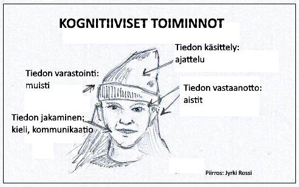
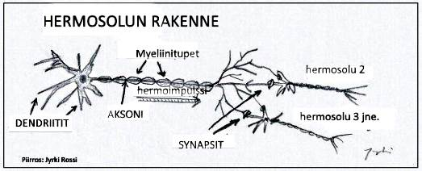
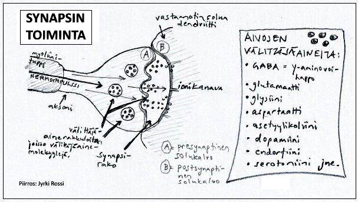
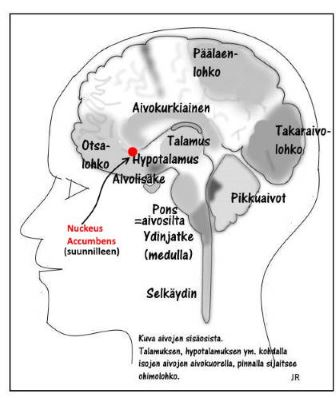
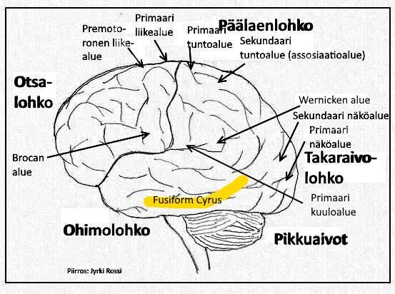
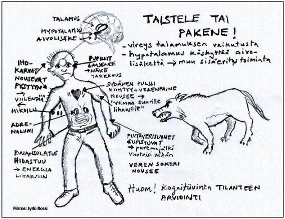
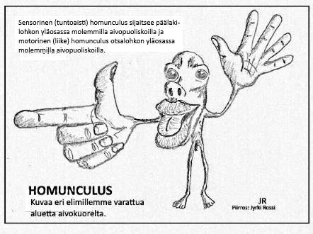
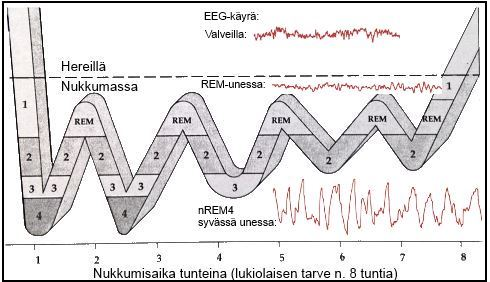

1. Johdatus kognitiiviseen psykologiaan
2. Aivot ja hermosto
3. Havaitseminen - tiedon vastaanotto
4. Muisti - tiedon säilyttäminen
5. Unet ja nukkuminen
1. JOHDATUS KOGNITIIVISEEN PSYKOLOGIAAN
1.1 Kognitiiviset toiminnot
• Selvittelee ihmisen tiedollisia toimintoja
• Cognitio (lat.) = tieto
• Kognitiivinen psykologia tutkii:
1. havaintotoimintoja (tiedon vastaanotto)
2. ajattelu- ja kielitoimintoja (tiedon käsittely ja käyttö) - ks. PS4-kurssi
3. muistitoimintoja (tiedon varastointi)

• Tiedollisia toimintoja eli prosesseja:
1. aistien ohjaama tiedonkäsittely (aistien kautta tuleva tieto ympäristöstä vaikuttaa toimintaan)
2. sisäisten mallien ohjaama tiedonkäsittely (ihmisen skeemat, käsitykset ja odotukset ts. muistitiedot ohjaavat toimintaa)
• Kognitiiviset toiminnot ovat yhteydessä tunteisiin (ja motiiveihin) ja fysiologisiin tapahtumiin
1.2. Sisäiset mallit
• Sisäiset mallit eli skeemat
• Ihmisen tietopohja jostakin asiasta (representaatio eli edustus asiasta)
• Säilömuistin tietorakenne, joihin uudet tiedot, taidot ja kokemukset liitetään
• Suhteellisen pysyviä skeemoja: äidinkielen kielioppi ja sanavarasto
• Muuttuvia skeemoja: tiedot, taidot yms., jotka kehittyvät ja hioutuvat kokemusten/uuden oppimisen kautta havaintokehässä
• Skeemaan sisällytettään mm.:
a) skriptit eli toiminnan käsikirjoitukset (esim. autolla ajo, kouluruokailussa käyttäytyminen)
b) kognitiiviset kartat (tilasta ja paikasta, esim. koulun "pohjapiirrustus")
c) tietokokonaisuudet (esim. jostakin aiheesta, kuten biologia)
• Sisäiset mallit kehittyvät ja muuttuvat havaintokehässä (Neisser):
- skeemat ohjaavat/suuntaavat havaintoja tiettyyn suuntaan
- havaitsija tekee havaintonsa skeemojensa kautta saaden kohteesta myös uutta tietoa
- uusi tieto muuttaa, kehittää tai vahvistaa skeemaa, jolloin skeemojen kautta tapahtuva havainnointi muuttuu ja tarkkenee
(esim. ensimmäistä kertaa koripallopeliä seuraava ihmettelee skeemojensa pohjalta, miksi tässä pelissä korista eli maalista tuleekin kaksi pistettä eikä yksi, myöhemmin peliä seuratessa skeema muuttuu myös ymmärtämään kolmen pisteen heitot ym. pelin säännöt)

2. AIVOT JA HERMOSTO
2.1. Hermoston rakenne ja toiminta
• HERMOSOLUT eli neuronit ovat tiedonvälitykseen erikoistuneita soluja.
• Hermosolun perusosat ovat:
- solurunko eli -keskus (sooma), jossa tuma sijaitsee
- dendriitit eli tietoa vastaanottavat haarakkeet
- aksoni eli tietoa vievä haarake; myeliinitupet nopeuttavat viestin kulkua

• Hermosolujen kolme päätyyppiä:
1) Sensoriset hermosolut aistinelimissä vastaanottavat aistitietoa
2) Motoriset hermosolut kuljettavat toimintakäskyt lihaksiin ja sisäelimiin
3) Välineuronit toimivat em. välissä.
• Synapsi on kahden hermosolun välinen liitoskohta, jossa hermoimpulssi joko kuolee tai jatkaa matkaansa
- synapsien plastisiteetti (joustavuus) eli synapsien rakenteen muuttuminen käytössä auttaa mm. oppimisessa
• Tieto siirtyy solun sisällä sähköisesti ja solujen välillä (synapseissa) kemiallisesti

• Synapsin välittäjäaine voi olla joko a) ehkäisevä (nostaa solukalvon ärsytyskynnystä) tai b) kiihdyttävä (laukaisee toiminnan)
- synapsirakkuloista erittyy välittäjäainetta
- esim. serotoniini (mielialaa nostava)
• Psykofarmakat eli psyykelääkkeet vaikuttavat välittäjäaineiden toimintaan
• Hermoverkko = neuronien järjestäytynyt joukko, joka vastaa jostakin toiminnosta (esim. silmän verkkokalvo)
• HERMOSTO jakautuu keskushermostoon (aivot ja selkäydin) sekä ääreishermostoon (somaattinen ja autonominen hermosto)
• Isot aivot jakautuvat oikeaan ja vasempaan aivopuoliskoon (hemisfääriin), joita yhdistää aivokurkiainen (naisella paksumpi).
- lateralisaatio eli aivopuoliskojen työnjako: vasen puolisko säätelee kehon oikeaa puolta, oikea taas vasenta puolta
- useimmilla ihmisillä (oikeakätisillä) vasen aivopuolisko hallitsee ja ohjaa sekä kielellisiä että matemaattisia taitoja
- oikea aivopuoliskoa on pidetty luovuuden, avaruudellisen hahmottamisen ja sosiaalisuuden ohjaajana
• Aivokuori (cortex) on n. 3 mm paksuinen harmaa poimuttunut ihmisen tietoisen ja tahdonalaisen toiminnan keskus. Aivokuori jakautuu rakenteellisesti otsa-, ohimo-, päälaen- ja takaraivolohkoihin ja toiminnallisesti sensorisiin aistialueisiin, motorisiin liikealueisiin ja assosiaatio- eli yhteysalueisiin.
- takaraivolohkolla näkö ns. visuaalinen cortex
- ohimolohkolla kuulo ns. auditorinen cortex, ja makuaisti
- päälaenlohkolla ihon aistien ja jänne- ja nivelaistien alue sekä liikkeitten säätely
- otsalohko huolehtii monista tunne-elämän toiminnoista, premotorinen alue säätelee tahdonalaisia liikkeitä
- wernicken alue ohimolohkolla puheen ymmärtämiseen (vaurio ns. sensorinen afasia)
- Brocan alue otsalohkolla (vasemm.) puheen tuottamiseen (vaurio ns. motorinen afasia)
• Pikkuaivot ohjaavat mm. tiedostamattomia ja automaattisia liiketoimintoja kuten tasapainon säilyttäminen
• Aivorunko (väliaivot, keskiaivot, aivosilta, ydinjatke ja aivoverkosto) yhdistää isot aivot selkäytimeen
- talamuksen kautta kulkevat aisteista tietoa tuovat radat aivokuorelle (nousevat radat) ja aivokuorelta lihaksiin toimintakäskyjä vievät radat (laskevat radat)
 

- hypotalamus säätelee homeostaattisten motiivien (nälkä, jano, uni jne.) sekä autonomisen hermoston toimintaa
- ydinjatke yhdistää selkäytimen aivoihin ja säätelee sydämensykettä ja hengitystä
- aivoverkosto (retikulaarimuodostelma, RAS) säätelee vireystilaa ja orientaatiota
• Somaattinen hermosto käsittää kaksi osaa: 1) sensoriset eli tuovat hermoradat, jotka kuljettavat aistitietoa reseptorista keskushermostoon ja 2) motoriset eli vievät hermoradat kuljettavat ärsytyksen keskushermostosta lihaksiin ja rauhasiin
• Autonominen (tahdostariippumaton) hermosto
1) sympaattinen (aktivoituu toimintatilanteessa, välittäjäaine noradrenaliini)
2) parasympaattinen (lepotilanteessa, varastoi energiaa, välittäjäaine astyylikoliini)

• UMPI- eli SISäERITYS suorittaa kemiallista tiedonsiirtoa elimistössä hormonien välityksellä
- hormonit ovat kemiallisia aineita, jotka veren välityksellä leviävät kohdealueeseen ja vaikuttavat haluttuja muutoksia
• Aivolisäke eli hypofyysi säätelee muiden sisäeritysrauhasten toimintaa sekä kasvua
• Kilpirauhanen erittää tyroksiinia, joka vaikuttaa suorituskykyyn ja vireyteen sekä aineenvaihduntaan ja kasvun nopeuteen
- vajaatoiminta aiheuttaa aikusella vireyden laskua, vetämättömyyttä; liikatoiminta taas ahdistusta, rauhattomuutta ja ärtyvyyttä
• Lisämunuaiset erittävät stressitilanteessa adrenaliinia (ydin) sekä kortikosteroideja (kuorikerros) pitäen yllä elimistön puolustusjärjestelmää
• Sukurauhaset erittävät sukupuolihormoneja: estrogeenia ja progesteronia (naisen munasarjat), testosteronia (kivekset) vaikuttaen sukupuoliseen käyttäytymiseen
2.2. Neuropsykologia, hermoston tutkiminen ja sairaudet
• Neuropsykologia 1) tutkii ihmisen aivojen ja hermoston sekä mielen välistä suhdetta tieteellisin (empiirisin) menetelmin sekä 2) selvittää hermoston vaurioiden ja häiriöiden syitä psyykkiselle toiminnalle.
• Psykofysiologiassa vaikutetaan henkilön psyykkiseen toimintaan tai käyttäytymiseen ja selvitetään miten hermoston toiminta muuttuu
• Fysiologisessa psykologiassa vaikutetaan hermoston toimintaan ja tutkitaan sen seurauksia psyykkiseen toimintaan ja käyttäytymiseen
• Aivotutkimusmenetelmiä
- yksittäissolurekisteröinnissä rekisteröidään ohuen elektrodin avulla hermosolussa kulkevia hermoimpulsseja (lähinnä eläinkokeissa)
- kokonaisvasterekisteröinnissä tutkitaan hermosolujoukkojen toimintaa.
- EEG eli elektroenkefalografia: mitataan aivojen sähköistä toimintaa iholle liimatuilla elektrodeilla
- MEG eli magnetoenkefalografia: mitataan aivojen sähköiseen toimintaan liittyviä heikkoja magneettikenttiä (kehitelty Suomessa, aivojen toimintaa mittaava)
- MRI eli magneettiresonanssikuvaus: tutkitaan aivojen rakenteita voimakkaassa magneettikentässä
- PET eli positroniemissiotomografia: mitataan aivoihin kulkeutuneita lyhytikäisiä radioaktiivisia isotooppeja, joita on ruiskutettu verenkiertoon; verenkierto vilkastuu alueilla, joissa tapahtuu aivotoimintaa (esim. lukiessa).
- fMRI eli funktionaalinen magneettiresonanssikuvaus: mitataan aivojen verenkiertomuutoksia voimakkaalla magneettikentällä
- angiografia: verisuonten varjoainekuvaus, jossa verenkiertoon ruiskutetaan röngtensäteitä läpäisemätöntä varjoainetta
• Aivoston vauriot ja toimintahäiriöt ilmenevät niin fyysisinä, psyykkisinä kuin sosiaalisina oireina.
• Aivovaurio on aivokudoksen vaurio (pysyviä)
- aiheuttajia: iskut, kallovammat, myrkytykset, aivojen verenkiertohäiriöt (aivoverenvuodot, aivoinfarktit), kasvaimet
- toinen alue saattaa ohjata tuhoutuneen alueen toimintoja
• Aivojen toimintahäiriöt ovat toiminnallisia häiriöitä ilman aivokudoksessa havaittavia muutoksia
- tilapäisiä aiheuttavat mm. myrkytykset, päihteet, sairauskohtaukset (tajunnan menetys)
- pysyviä mm. ADHD (MBD), epilepsia
• Epilepsia on aivojen sähköisen toiminnan häiriö (poikkeavia sähköpurkauksia), johon liittyy tajunnantilan muutoksia, havainto- ja ajatushäiriöitä, kouristuksia ja tunne-elämän häiriöitä (0,5% väestöstä)
• Alzheimerin tauti aiheuttaa tasaisesti etenevän tylsistymisen (dementian). Aivoissa normaalia vähemmän asetyylikoliini välittäjäainetta.
• Korsakovin syndrooma: runsas alkoholin käyttö vaurioittanut väliaivoja, jolloin uusien asioiden mieleenpainaminen vaikeutuu, vitamiinihoito (tiamiini) ei enää auta
• MS-tauti eli multippeliskleroosi (keskushermoston pesäkekovettumatauti): hermosyytä suojaava myeliinituppi vioittuu tai katoaa, jolloin hermoimpulssi ei etene hermosolussa. Oireina näköhäiriöt, raajojen lihasheikkous, koordinaatio-ongelmat ym.
2.3. Psyykkisten toimintojen hermostollinen säätely
• VIREYSTILAN säätelystä vastaa aivoverkosto eli RAS (retikulaarinen aktivaation säätöjärjestelmä)
- säätelee vireyttä, luo unitilan (uni- ja valvevaihtelut näkyvät EEG:ssä)
- verkkomainen tumakkeiden muodostelma, joka ulottuu ydinjatkoksesta väliaivoihin
- saa tietoa lähes kaikkialta ihmisen tilasta sekä sisältä että ulkoa aistien avulla (ns. nousevat radat)
- vaikuttaa selkäytimen kautta lihasten toimintaan (ns. laskevat radat)
- RASiin vaikuttaa elimistön hormonaalinen säätely, ulkoiset ärsyketekijät, kognitiiviset tekijät ja itsesäätely
- pystymme nopeasti suuntaamaan tarkkaavaisuutta kiinnostaviin asioihin
• TUNTEIDEN JA MOTIIVIEN SääTELYSTä vastaa limbinen järjestelmä
- ns. eläimellinen viettikeskus
- koostuu: isojen aivojen vanhemmista osista, talamuksesta, hypotalamuksesta, hippokampuksesta ja amygdalasta (mantelitumakkeesta)
- RAS:n kanssa säätelee tunneaktivaatiota
- säätelee tunnekvalititeetteja (aggressio, pelko, raivo, seksuaalisuus)
- saa aikaan mielihyvän ja mielipahan vaikutuksia
- säätelee tarpeiden mukaista käyttäytymistä
- hypotalamus toimii välittäjänä kognitiivisten toimintojen ja autonomisen hermoston sekä umpieritysjärjestelmän välillä
• AISTITOIMINTOJEN hermostollisen perustan muodostavat 1) aistinelimet (esim. silmän verkkokalvon reseptorit), jotka muuttavat ärsykkeet hermoimpulsseiksi, 2) aistihermot (esim. näköhermo), jotka kuljettavat viestin talamuksen kautta 3) aivokuoren sensoriselle alueelle (esim. näköalue takaraivolohkolla).
• Aikakoodaus - ärsyke koodataan hermoimpulssien ajallisena ominaisuutena esim. voimakas ärsyke > sitä useampi impulssi kulkee solussa tietyssä ajassa.
• Paikkakoodaus - eri aisteista tulevat ärsykkeet koodataan aina tietyn tyyppisiksi, esim. silmästä tulevat ärsykkeet koetaan aina valona (vrt. silmän hierominen > valoaistimuksia).
• Primaarilla tuntoalueella aivokuorella (sensorinen homunculus) voidaan hahmottaa eri tuntoaistien edustus ns. homunculuksen (pikku-ukon) muodossa (vastaavasti liikeaivokuorella motorinen homunculus).
• Aivojen sensoristen alueiden vauriot aiheuttavat agnosiaa, toimivan aistinelimen kautta tulevan tiedon hahmotus- ja tunnistushäiriöitä.

• LIIKKEIDEN hermostolliseen säätelyyn osallistuvat useat aivojen alueet.
- otsalohkon etuosan motoriset alueet suunnittelevat ja ohjelmoivat tahdonalaiset liiketoiminnot.
- oikea aivopuolisko antaa käskyt kehon vasemmalle, ja vasen puolisko oikealle puolelle.
- primaari liikealue toimeenpanee liikesarjaan (vrt. homunculus)
- pikkuaivot osallistuvat nopeiden ja tarkkaa ajoitusta vaativien liikkeiden koordinointiin.
- cp-vamma (cerebral palsy) on tav. sikiökauden aikainen vaurio aivojen liikealueella ja näkyy liiketoimintojen vaikeutena.
• MUISTI ja OPPIMINEN johtuu muutoksista hermoverkoissa, synapsien toiminnassa ja yksittäisissä hermosoluissa.
- tiedonkäsittely muistissa: aistiärsyke tulee 1) sensoriseen eli AISTIMUISTIIN (signaalisarja aistijärjestelmässä), josta 2) TYöMUISTIIN (signaalinen kierto hermoverkoissa) valikoituu murto-osa tarkkaavaisuuden vaikutuksesta. Työmuistista kertauksen avulla siirtyy murto-osa 3) SäILöMUISTIIN (kemiallisia muutoksia hermoverkkojen synapseissa), jossa tapahtuu opitun asian pysyvä tallennus.
- mustijäljet eli engrammit syntyvät laajalle hajautetusti hermoverkkoihin aivoston eri alueille.
• KIELEN ja PUHEEN kannalta keskeisiä aivokuoren alueita ovat Brocan (puheen tuottaminen) ja wernicken (puheen ymmärtäminen) alueet.
3. HAVAITSEMINEN - TIEDON VASTAANOTTO
3.1 Havaitseminen ja havaintokehä
• Tapahtuma:
- aistin reseptorit (tapit ja sauvat) ottavat vastaan ärsykkeen (valo), joka viestittyy näköhermoa pitkin aivojen takaraivolohkolle (näköalue)
- aivot tulkitsevat tiedon kokemuksen ja sisäisten mallien avulla ja välittävät sitten tarvittavat toimintakäskyt lihaksiin
• Näkötiedon käsittely aivoissa tapahtuu kahta reittiä:
- MIKä-reitti = kohteiden tunnistaminen, mikä kohde on? Siis näkötiedon avulla tunnistetaan.
- KUINKA-reitti = kohteeseen suuntautuminen/toimiminen, kuinka käsittelen kohdetta? Näkötiedon avulla ohjataan toimintaa.
• Havaitseminen = eri aisteilla tapahtuva informaation hankkiminen ympäristöstä
- ihminen valikoi ja tulkitsee tietoa
- kaikkia ärsykkeitä ei havaita
• Havaintomme ja ulkomaailma eivät vastaa täysin toisiaan (vrt. filos. empirismi)
• ärsytyksen on oltava riittävä, jotta aistireseptorit ottavat sen vastaan
- havaintokynnyksen alapuolelle jäävä ärsyke = subliminaalinen ärsyke (väite, että aivot ennättävät rekisteröidä salaman nopeasti väläytetyn mainostekstin tai kykenee kääntämään musiikkikappaleen ns. takaperoisen viestin oikeinpäin, ei perustu tieteeseen, sillä tieteen tulokset aiheesta ovat hyvin ristiriitaisia, silti esim. EU on kieltänyt subliminaalisen mainonnan v. 1989)
- sensorisen deprivaation kokeet osoittavat, että liian vähäinen ärsykemäärä on vaarallista mielenterveydelle
- Aistit ovat rajallisia: on ärsykkeitä, joita ihminen ei voi aistia (esim. radioaktiivinen säteily, hiilimonoksidi), lisäksi aistit ovat rajoittuneet tietylle ärsykealueelle (esim. valo)
• Havaintokehä = tapa kuvata hetki hetkeltä ihmisen psyykkistä vuorovaikutusta ympäristönsä kanssa (kehittelijä: amer. Ulrich Neisser, 1976/1981)
- ulkomaailma ja ympäristö muokkaa ihmisen maailmankuvaa >
- maailmankuva (käsitykset, tiedot, uskomukset, skeemat) suuntaavat havaintojamme, toimintaamme >
- havainnoidessamme valikoimme ulkomaailmasta kiinnostuksemme mukaiset asiat (KATSO skeemoista ja havaintokehästä myös kurssin alusta luvusta 1.2.)
3.2 Tarkkaavaisuus ja aineksen valikoituminen
• Valikoiva tarkkaavaisuus = vain osa aistien välittämästä informaatiosta valikoituu käyttöön
• Tarkkaavaisuus voidaan suunnata tahallisesti (tietoisesti) tai se voi suuntautua tahattomasti (passiivinen tarkkaavaisuus, orientaatiorefleksi: uusi outo ärsyke laukaisee)
• Dikoottisen (kahdella korvalla) kuuntelun kokeessa molempiin korviin syötetään yhtä aikaa eri tarinaa kuunneltavaksi. Mikäli koehenkilön tuli kuunnella vain toiseen korvaan tulevaa tarinaa, hän kykeni kertomaan sen yksityiskohtaisesti, mutta ei muistanut toisesta tarinasta juuri mitään.
- Varhaisen valinnan teorian mukaan ihminen päästää tietoisuuteensa (fysikaalisten piirteiden perusteella) vain tahdonalaisesti valitsemansa viestin.
- Myöhäisen valinnan toerian mukaan viestin merkityksen sisältö vasta ratkaisee kumpi viesteistä todellisesti kulkee käsittelyyn (tietoisuuteen), esim. oma nimi huomioidaan merkityksen perusteella, vaikka olisikin keskitytty kuuntelemaan eri korvasta tulevaa tarinaa.
• "Dikoottisen katselun" koe eli binokulaarinen kilpailu (Prof. Christof Koch): kun eri silmiin näytetään eri esinettä/kuvaa, tapahtuu aivoissa binokulaarinen kilpailu, jossa ihminen tiedostaa 3-6 sekuntia toiseen silmään tulevan kuvan ja sitten taas muutaman sekunnin ajan toiseen silmään tulevan kuvan. Ihminen ei siis kykene tiedostamaan/havainnoimaan (vaikka aistiikin) molempia kuvia yhtäaikaa.


• Havaintojen valikoitumiseen eli tarkkaavaisuuteen vaikuttavat:
1. ärsykkeeseen liittyvät tekijät (ärsyke)
- ärsykkeen voimakkuus
- ärsykkeeseen on adaptoiduttu ja vasta voimakas muutos aiheuttaa tarkkaavaisuuden heräämisen
2. Subjektiivinen tilanne (havaitsija)
- havaitsijan tunnetila, vireys, motiivit, tarpeet
- havaitsijan fysiologinen tila
- havaitsijan kokemukset ja tieto
3. Sosiaalinen tilanne (tilanne, ympäristö)
- aikaisemmat tapahtumat, muut henkilöt
- ympäristön asenteet, arvostukset ja normit, stereotypia jne.
• Coctail party -ilmiöllä tarkoitetaan tarkkaavaisuuden kohdistumista merkittävään seikkaan (esim. oma nimi) aineistossa, johon varsinaisesti ei kiinnitetä huomiota
• Jaettu tarkkaavaisuus: voidaan suunnata eri kohteisiin (sitoa kengännauhoja, kuunnella musiikkia)
- Tarkkaavaisuutta säätelee otsalohkojen etuosat (otsalohko on ikäänkuin ihmisen lennonjohtotorni).
• Tiedonkäsittelyn kaksi päätyyppiä (Shiffrin ja Schneiderin mukaan):
1. Automaattinen prosessointi
- nopeaa ja vaivatonta
- tapahtuu kuin itsestään
- harjoittelun tuloksena (esim. tanssiminen, pianon soitto)
2. Kontrolloitu prosessointi
- hidasta, edellyttää ponnistelua
- vaatii keskittymistä
- kun jotakin asiaa harjoitellaan
3.3 Havaintojen jäsentyminen
A. Hahmottumisen yleisiä periaatteita
• Strukturalismi: havainto koostuu yksittäisistä osista summautuen ts. kokonaishavainto laskettiin summaten kaikki kokonaisuuden alkeisosat
• Hahmopsykologia: havainto on enemmän kuin osiensa summa. Kokonaisuus on ennen yksittäisiä osia (Berliinin koulukunta: Wertheimer, Koffka, Köhler)
• Hahmolait:
1. Kuvio ja tausta
- hahmottamisen keskeinen toiminto on erottaa kuvio taustasta, tällöin pienempi pinta koetaan kuviona ja suurempi taustana.
2. Läheisyyden laki
- lähekkäiset pisteet hahmotetaan samaan ryhmään kuuluviksi
3. Sulkeutuneisuuden laki
- pienehköt umpinaiset alueet tulkitaan kuvioksi
4. Symmetria eli samankaltaisuuden laki
- samankaltaiset ärsykkeet tulkitaan kuuluviksi yhteen ja yhdeksi kuvioksi
5. Hyvän jatkon laki
- yhtenäiset viivat koetaan itsenäiseksi kuvioksi
6. Yhteisen liikkeen laki
- samanlaista liikettä tekevät pisteet hahmotetaan yhteenkuuluviksi (yhtäaikaa lentoon pyrähtävät linnut)
7. Valiomuotoisuuden laki
- havainnot suosivat tuttuja muotoja. Nopeasti katsottaessa (tai jälkikuvassa) epätarkkuudet häviävät
• Illuusiot eli havaintoharhat
- Tiettyjen kuvioiden yksityiskohdat saattavat johtaa hahmotusta niin voimakkaasti, että kokonaishavainto vääristyy.
- Harhojen osoittamiseksi saatetaan tarvita jopa viivainta ja mittaamista.
- Tunnetuimpia illuusioita on ns. Müller-Lyer-illuusio eli nuoliharha.
- Illuusiot eroavat hallusinaatioista siinä, että illuusioilla on ulkoinen ärsykeperusta kun taas hallusinaatiot perustuvat keskushermoston häiriöihin.
- Illuusioita ovat mm. 1) monitulkintaiset kuviot (esim. Neckerin kuutio), 2) ristiriitaiset kuviot (Escherin taide tai ns. mahdoton kolmio), 3) kuvitellut kuviot (Kanizan kolmio) tai 4) havaintovääristymät (Muller-Lyer -illuusio).
• Havaintojen pysyvyys
- konstanssi-ilmiö = pysyvyys, koemme ärsykeolosuhteiden muutoksesta huolimatta kohteet suhteellisen pysyvinä
- mm. koon ja muodon konstanssi, vaaleus- ja värikonstanssi
B. Syvyyden havaitseminen
• Ihminen hahmottaa ympäristön kolmiulotteisena (ts. myös syvyyssuunnassa)
• Synnynnäinen kyky (vrt. Eleanor Gibsonin näköjyrkännekokeet lapsilla ja eläimillä)
• Binokulaarisesti katseltu ympäristö muuttuu aivojen avulla kolmiulotteiseksi
• Syvyyden (etäisyyden) hahmottamisessa auttavat:
- silmän linssin (mykiön) mukautuminen katseluetäisyyteen
- kaukaiset esineet näyttävät pienemmiltä
- perspektiivi-ilmiö
- valot, varjot ja esineiden peittävyys
- pintagradientit
- katsottaessa horisonttiin, horisonttia lähinnä olevat esineet/eläimet/ilmiöt mielletään kaukaisimmiksi (esim. taivaalla linnut tai maassa puut)

C. Värien havaitseminen
• Esineen kokeminen värillisenä riippuu siitä, mitä sähkömagneettisen säteilyn aallonpituuksia kukin kohde läpäisee tai heijastaa.
• Värien havaitsemisen teorioita:
1. Youngin-Helmholtzin kolmiväriteoria
- lähtökohtana värien sekoituskokeet
- verkkokalvolla on kolmentyyppisiä tappisoluja, joista kukin reagoi erityisen herkästi tiettyyn aallonpituuteen:
a) punaiselle herkät solut (650 nm)
b) vihreälle herkät solut (530 nm)
c) siniselle herkät solut (460 nm)
2. Heringin vastakkaisväriteoria
- lähtökohtana värien havaitsemisen elämyksellinen puoli
- värihavainto perustuu vastakkaisiin puna-viher- ja sini-keltaparien muodostamiin kontrastivaikutelmiin.
- on voitu todeta mm. värikonstrasti- ja jälkikuvakokeilla.
- jälkikuva = verkkokalvolle syntyvä edellisen ärsykkeen aiheuttama jälkivaikutus
• Värien sekoituksen päälajit:
1. Additiivinen (yhdistävä, kokoava)
- yhdistetään aallonpituudeltaan erilaisia säteilyjä
- punaisen, sinisen ja vihreän avulla voidaan tuottaa kaikki muut kirjovärit (väritelevision periaate)
2. Subtraktiivinen (vähentävä, peittävä)
- peitetään heijastavia pintoja uusilla värisävyillä (esim. maalien sekoittaminen).
• Värisokeus
- täydellinen värisokeus: ei nähdä lainkaan kirjovärejä (havaitseminen tapahtuu vain sauvojen varassa).
- puna-viher -sokeus: punaista ja vihreää ei kyetä erottamaan toisistaan. Periytyvä ominaisuus (miehistä 8 %:lla, naisista 0.6 %:lla)
- sini-kelta -sokeus: keltaista ja sinistä ei kyetä erottamaan toisistaan.
3.4 Havaintopsykologisten tutkimusten merkitys
• Liikennepsykologia: lähinnä näön ja kuulon tutkimus, nopeus- ja etäisyysarvioinnit, liikennemerkkien informatiivisuus, liikenneturmien syyt ja ehkäisy.
• Ergonominen tutkimus: työsuojelu ja työtä helpottavat apuvälineet. Esim. meluhaitat.
• Elintarviketeollisuus: haju- ja makututkimukset.
• Terveydenhoito.
• Viestintä ja mainonta: myynnin edistäminen ja kommunikaation tehostaminen.
• Vapaa-aika: videot, pelit, tietokone-ohjelmat jne.
4. MUISTI - TIEDON SäILYTTäMINEN
4.1 Muisti ja sen tutkiminen
• Muisti liittyy kaikkeen tiedon käsittelyyn
• Muistiin on tallentunut monenlaisia toimintoja ja valmiuksia: aikaisempia havaintoja, hajuja, makuja, ääniä, toimintakaavioita jne.
• Ihminen muistaa asioita paremmin tunnistamalla kuin mieleenpalauttamalla. Tunnistaminen tapahtuu tiettyjen asiakokonaisuuksien yhteenliittymisen kautta.
• Muistin tutkiminen:
- 1870-luvulla saks. Hermann Ebbinghaus tutki lähinnä merkityksettömien tavujen mielessäsäilymisaikoja (ns. unohtamiskäyrä)
- Sir Frederic Bartlett käytti merkityksellistä aineistoa: muisti ei ole ärsykkeitä tallentava rekisteri, vaan järjestelmä, joka luo koko ajan uutta aineistoa muistaessaan opittua (vrt. B:n piirtämiskoe)
- 1950-luvulla Atkinson ja Shiffrin tutkivat muistijärjestelmiä (ns. muistin monisäilömalli, jossa jako aisti-, työ- ja säilömuistiin)
- 1960-luvulla (kognitiivinen psykologia) keskeistä tiedon käsittelytapojen tutkiminen, esim. miten tieto rekisteröidään, tallennetaan ja palautetaan mieleen.
- Nykyisin ollut keskeistä aivotutkimus: muistinjäljen etsiminen, hippokampuksen vaikutus muistiaineksen kiinnittymisessä ja uuden oppimisessa, erityisesti episodisissa muistitehtävissä (vrt. tapaus H.M., jolta 1953 epilepsian hillitsemiseksi poistettiin hippokampus), amygdala eli mantelitumakkeen merkitys tunnesidonnaisen aineksen muistamisessa. Sekä hermosolujen synapsien muutosten tutkiminen oppimisen yhteydessä (uusien synapsihaarakkeiden synty neuronien välille ja synapsin toiminnan tehostuminen).
4.2 Sensorinen muisti
• Eli aisti- eli puskurimuisti
• Ottaa vastaan aisti-informaatiota etenkin näkö- ja kuuloaistin kautta
- ikonimuisti koodaa näköaistimukset (kesto: alle 1 sek; Sperlingin kirjainmatriisikokeet 1960-luvulla)
- kaikumuisti koodaa kuuloaistimukset (kesto: alle 1 sek; äänen päättymiskokeet, joissa koehenkilöillä todettiin subjektiivinen n. 0,1 sekunnin kaikuviive)
• Informaatiorekisteri, johon kaikki aisti-informaatio saapuu valikoimatta (vain osa ärsykkeistä käsitellään)
• Suuri kapasiteetti
• Muistiaineksen häviäminen alkaa heti ärsykkeen päättymisestä
• Toimii sähköisesti
• Tarkkaavaisuus siirtää halutun informaation työmuistiin
4.3 Työmuisti
• Eli lyhytkestoinen muisti
• Tietoisuudessa tapahtuva prosessointi (oppiminen, ajatteleminen)
• Tallentaa vain osan sensorisen muistin sisällöstä
• Käsittelee kerrallaan rajallisen määrän informaatiota (n. 7+-2 yksikköä)
- muistisilta numero/kirjain tms. jonopituus, jonka ihminen pystyy toistamaan (esim. 7-9-2-5-3-8)
- mieltämisyksikkö, merkityksen sisältävä tuttu lyhenne, joka sisältää laajemmin tietoa (HIFK, TPS, tms, jne)
• Tieto säilyy n. 20 sek, ellei asiaa kerrata
• Tallettaa tiedon ääni- tai näkömielikuvina tai semanttisena koodina
• Alan Baddeleyn mukaan työmuistin rakenne:
- fonologinen silmukka - kielellinen aines, sanat ja lauseet toistetaan (vasemman aivopuoliskon päälakilohko tärkeä)
- visuaalis-avaruudellinen lehtiö - näönvarainen aines (oikean aivopuoliskon päälaenlohko tärkeä)
- komentoyksikkö ohjaa fonologisen silmukan ja visuaalis-avaruudellisen lehtiön toimintaa säädellen tarkkaavaisuutta.
- episodinen puskuri auttaa tallentamaan tapahtumia säilömuistiin, sekä fonologisen silmukan että visuospatiaalisen lehtiön tiedot säilytetään hetkellisesti tapahtumana jatkokäsittelyä varten.

• Tärkeät omaan elämään liittyvät asiat muistetaan kertaamatta (samoin motivaation kannalta merkityksellinen aines)
4.4 Säilömuisti
• Eli pitkäkestoinen muisti, tiedon pysyvä tallentaminen
• Tieto siirtyy työmuistista joko kertaamalla tai motivaatio- ja tunnetekijöiden vaikutuksesta
• Kapasiteetti lähes rajaton (vaikeutena mieleen palauttaminen)
• Kaikki opittu aines, lapsuuden muistot, äidinkieli, toimintamallit jne.
• Kesto pitkä tai pysyvä
• JAKO: 1) Asiamuisti (deklaratiivinen eli sisältömuisti) ja 2) Taitomuisti (proseduaalinen eli toimintatapamuisti).
• Asiamuisti jakaantuu lisäksi:
1. Episodi- eli elämänkertamuisti
- tallentaa asiat tapahtumina
- esim. lapsuuden muistot, kokemukset
2. Semanttinen eli tietomuisti
- tallentaa asiat merkityssisällön perusteella
- esim. käsitteiden määritelmät
- hierarkkinen malli: käsitetieto on hierarkkisesti järjestynyt muistiin (eläin > lintu > kiuru)
- luokittelumalli: asiat ja ilmiöt sijoitetaan omiin luokkiinsa (käsitekartat, mind-mapping)
• Tieto tallentuu kemiallisesti hermoverkoissa (syntyy muistijälkiä)
• Metamuisti = muistiprosessit, jotka ilmaisevat, mitä tietoja muistissa on
• Kielellä-pyörii -ilmiö: tarvitaan lisävihjeitä palauttamiseen
• Déjá vu -ilmiö: "olen elänyt ennenkin"
• Jamais vu -ilmiö: tutut asiat koetaan vieraina
4.5 Unohtaminen
• Alkaa välittömästi tiedon saapuessa työmuistiin
• Unohtamisen syitä (informaatio ei siirry aisti/työmuistista eteenpäin):
1. Tarkkaavaisuus kiinnittyy muualle kuin opittavaan asiaan
2. Heikko motivaatio (asiaa ei tarvittu kuin kerran, jolloin sitä ei kerrattu)
3. Muut sisäiset häiriöt (väsymys, sairaus, vanhusten amnesia, vähävirikkeisyys, orgaaninen vamma)
4. Ulkoiset häiriöt (viestinnän häiriö, melu)
• MUISTIAINEKSEN UNOHTAMISTEORIOITA
1. Muistin ehkäistymis- eli interfferenssiteoria:
- eri muistisisällöt häiritsevät ja ehkäisevät mieleenpalauttamista
- proaktiivinen ehkäistyminen: ennen opittu häiritsee uuden mieleenpalauttamista
- retroaktiivinen ehkäistyminen: jälkeen opittu pyyhkii pois ennestään opittuja asioita
2. Muistin kulumis- eli häipymisteoria
- muistijälki heikkenee, haalistuu vanhetessaan
- tarpeeton aines unohtuu
3. Muistin motivationaalinen eli torjuntateoria
- psykoanalyyttinen näkemys
- yksilö torjuu epämiellyttävät ja pelkoa herättävät seikat
4. Muistin fysiologiset teoriat
- aivotärähdys, sähköshokki tms. poistaa tuoreita tapahtumia muistista
• Unohtaminen on tärkeää, ettei lyhytkestoinen muisti kuormitu liikaa
• Amnesia=muistihäiriö
- anterogradinen amnesia: uudet asiat eivät tallennu säilömuistiin, vaan unohtuvat työmuistista jopa sekunneissa. Vanhat asiat sen sijaan muistetaan. Vanhusiällä tyypillistä, kun ihminen dementoituu tai kärsii Alzheimerin taudista (lähimuisti ja uuden oppiminen vaikeutunut usein yli 80-vuotiailla vanhuksilla, joiden aivoissa hermoradoissa ja neuroneissa tapahtuu vaurioita leviten ohimolohkon sisäosista aivokuorelle).
- retrogradinen amnesia: aivovaurion (onnettomuus, aivoinfarkti) seurauksena menneisyyden asiat katoavat muistista. Ns. muistinmenetys.
5. UNET JA NUKKUMINEN
• Unifaktaa:
- Nukumme 1/3 elämästämme, unessa aivot lokeroivat edellispäivän tapahtumat, muistijäljet vahvistuvat, synapseja syntyy hermosolujen välille, REM-unessa näemme unia, nREM-vaiheita on neljä, joissa kevyen unen 1.-2. vaiheista siirrymme syvään uneen 3.-4. vaiheeseen. Tärkeimmät vaiheet ovat nREM4 (syvin uni) ja REM- eli vilkeuni (Rapid Eye Movements). Ilman unta kuolemme (rottakokeet).
- REM- eli vilkeunen aikana näemme unia, autonomiset toiminnot saattavat kiihtyä, mikä näkyy sydämen sykkeen ja hengityksen vaihteluna sekä erektiona. Muutoin lihaksisto lepää. nREM4 aikana lihaksisto toimii, mutta aivot lepäävät. Syvän unen vaiheeseen liittyvätkin unissakävely, unissapuhuminen ja lapsilla yökastelu.
- Huom. nykyisin unijaksotus yhdysvaltalaisessa tutkimuksessa on valvetilan (beta-aallot) jälkeen uneliaisuus, rentoutuneisuus (alfa-aallot) ja sitten vasta N1, N2 (theta-aallot) ja N3 (delta-aallot) sekä REM.

•
Miksi nukumme?
- Aivot tarvitsevat unta lähinnä kahdesta syystä: a) REM-unen eli vilkeunen aikana aivojen hermosolujen väliset yhteydet (synapsit) kehittyvät ja aivotoiminta on vilkasta (lihaksisto saa levätä), b) nREM-unen syvien vaiheiden (3+4) aikana aivotoiminta hidastuu ja aivot saavat levätä (kun taas lihaksisto toimii, kuten unissakävely). Aivoihin ikäänkuin tankataan polttoaineena glykogeeniä, joka valvoessa vähenee.
- Vastasyntynyt nukkuu n. 16 h/vrk pääasiassa REM-unta (n. 60%), joten vauvan aivojen kehittyminen on voimakasta. Unen tarve on lapsilla ja alakouluikäisillä n. 10-12 tuntia, nuorilla n. 8-10 tuntia ja aikuisilla n. 7-9 tuntia. Unen tarve on vanhemmiten yksilökohtaisempaa.
- Valvoessa aivoissa syntyy adenosiinia, joka estää etuaivokuoren valvetilasolujen toimintaa. Kofeiinilla voidaan estää adenosiinin vaikutusta jonkin aikaa. Pimeään aikaan ihmisen elimistössä alkaa lisääntyä melatoniinin määrä, jolla on myös vaikutusta ihmisen uni-valve -rytmiin.
- Vaikuttaa muistamiseen: päivällä opitut ja koetut asiat painuvat muistiin synapsien määrän lisääntyessä unen aikana (syntyy muistijälki), vastaavasti turha aines unohtuu ja lisäksi unet lokeroivat asiat oikeisiin mittasuhteisiin/järjestykseen.
- Välttämätön ihmisen psyykkiselle tasapainolle. Ihminen, joka väittää valvoneensa monta yötä putkeen, on huomaamattaan pakotettu nukkumaan ns. mikrounia tasapainon säilyttämiseksi.
•
Unien merkitys
- Tieteellisesti: tietojen ja taitojen tallennus/turhan poisto, aivojen ja elimistön energiatasapaino
- Kautta historian uskottu ”enneuniin”. Unessa koetut ja aamulla muistetut asiat voivat alitajuisesti vaikuttaa esim. ihmissuhteisiin ja tulevan päivän toimintoihin (fantasiaunet, kauhu-unet).
- Sigmund Freudin mukaan ilmiuni (manifestiuni) eli uni, jonka voimme pukea sanoiksi, pitää sisällään piilomerkityksen (latenttiuni). Unet ilmentävät torjuttuja toiveitamme, pelkojamme ja halujamme ja ovat usein seksuaalisia todelliselta merkityssisällöltään.
- Yleisiä unia: putoaminen, lentäminen, pakeneminen, rahan tms. löytäminen, seksiunet, koulu jne.
•
Unitutkimus
- Aiemmin yksinkertaisesti seurattiin nukkujaa, liikkumista ja huomattiin luomien alla tapahtuvat nopeat silmän liikkeet (REM).
- Tärkeäksi unitutkimuksen laitteeksi kehittyi EEG (aivosähkökäyrän mittaaminen).
- Lisäksi mitataan esimerkiksi EOG (silmänliikkeet) ja EMG (leuanaluslihasten lihasjännitys).
•
Erilaisia unihäiriöitä ovat mm.
nukahtamisvaikeudet (johtuvat mm. stressistä) ja
uniapnea, joka aiheuttaa lyhyitä toistuvia hengityskatkoksia ja siten happivajausta aivoihin. Uniapnea on yleisempi miehillä, jotka ovat liikalihavia, tupakoivat ja joilla on muutoinkin epäterveet elämäntavat. Erikoisempi unihäiriö on
narkolepsia, jossa henkilö nukahtaa yhtäkkiä (sikainfluenssarokotteen jälkiseurauksena Suomessa esiintyi nuorten keskuudessa narkolepsiaa).
"Night Terror" eli yöllinen kauhukohtaus on pikkulapsi-iässä oleva REM-uneen liittymätön lapsen pelkokohtaus, jossa lapsi on paniikinomaisessa pelkotilassa ja vain herättämällä lapsi saadaan rauhoittumaan.
•
Hyvän unen edellytyksiä: 1) säännöllinen vuorokausi- ja unirytmi, 2) ei huolia vuoteeseen, 3) ei piristäviä tai päihdyttäviä aineita (kofeiini, nikotiini, alkoholi) muutamaan tuntiin ennen nukkumista, 4) rauhoittavien asioiden tekeminen ennen nukkumaan menoa (ei esim. urheilua, tietokonepelaamista), 5) rauhoittava nukkumisympäristö – pimeys, hiljaisuus, sopiva viileys.